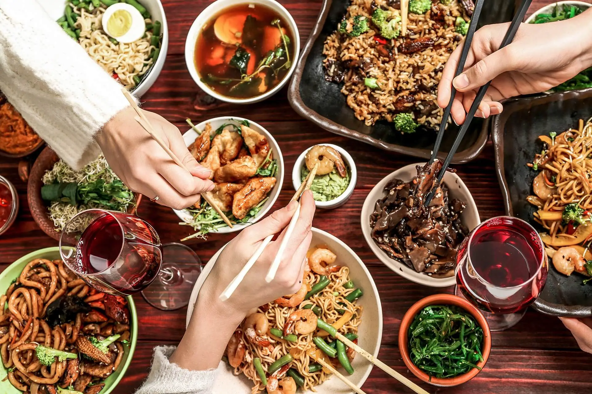
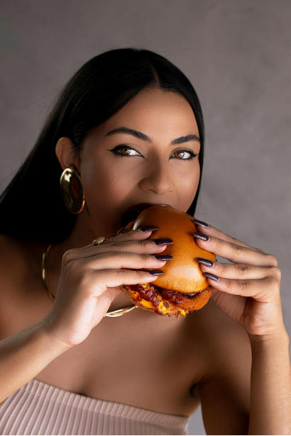
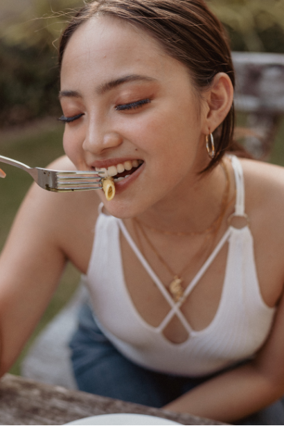

En el Menú

Nosotros
En Yangtse, creemos que la buena comida tiene el poder de conectar a las personas. Inspirados en la grandeza y tradición del majestuoso río que nos da nombre, llevamos la auténtica esencia de la gastronomía china directamente a tu puerta. Cocinamos cada platillo al momento utilizando ingredientes frescos, salsas artesanales y el balance perfecto de los sabores orientales al wok. No solo entregamos comida rápida; entregamos una experiencia culinaria deliciosa, de porciones generosas y hecha con pasión, para que descubras el verdadero sabor de Oriente en cada bocado.
Cuestión de
Gustos
Hay una razón por la que nuestros clientes vuelven una y otra vez. El boca a boca ha sido siempre nuestra mejor publicidad, porque un plato salteado al wok con ingredientes de verdad habla por sí solo.
Frescura en cada salteado
Vegetales crujientes seleccionados al día, cortes de calidad y la técnica tradicional del wok para conservar todo el sabor original.
Recetas artesanales y generosas
Salsas hechas en casa desde cero, respetando el balance perfecto de la gastronomía oriental. Porciones abundantes hechas para compartir.
Directo a tu mesa
Servicio rápido, empaques que conservan la temperatura ideal y la garantía de recibir la auténtica comida china sin salir de casa.
De nuestra Comunidad

Mariana, fanática del wok
Pedir en Yangtse ya es nuestra tradición de cada viernes. El pollo agridulce y el arroz chaufa llegan siempre hirviendo, súper frescos y con ese sabor ahumado único que solo te da un buen wok.
José, nuevo vecino
Descubrí Yangtse buscando comida china de verdad cerca de mí. Las porciones son súper generosas, los vegetales crujientes y el delivery llega volando. Se convirtió en mi opción favorita.

Laura, amante de los dumplings
Sus wontons y dumplings artesanales son una locura. Se nota la calidad de los ingredientes y que preparan las salsas desde cero. ¡Comida reconfortante y deliciosa para compartir!